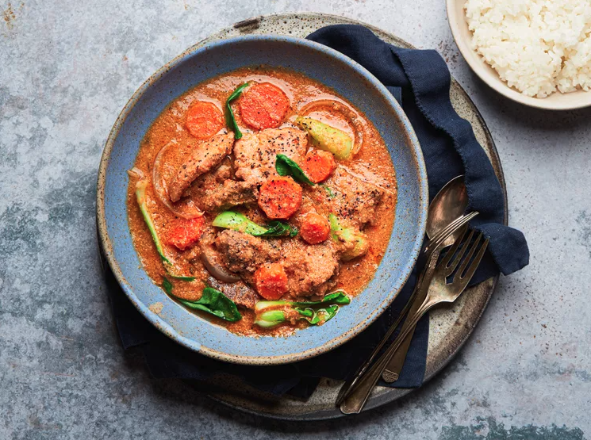

African Peanut Stew

Description
Once upon a time, a restaurant called The Sojourner Café operated in downtown Santa Barbara. I first tried their vegan interpretation of this dish and immediately fell in love with it -- I think they used peanut butter instead of going the extra mile with the soaked peanuts. This dish is great with goat, chicken, beef, or any veggies you like. I love it on cold days in winter.
This recipe was simplified from Serious Eats' recipe, here.
Ingredients
- 1 cup (5 1/2 ounces; 160g) ounces raw shelled red-skin peanuts
- 5 teaspoons (15g) Diamond Crystal kosher salt, divided; for table salt use half as much by volume
- 7 cups (1.65L) homemade chicken stock or store-bought low-sodium chicken broth, divided
- 2 medium red onions (1 pound; 453g); 1 onion roughly chopped, 1/2 onion cut into ½-inch pieces, and the remaining 1/2 onion halved and thinly sliced, divided
- 1 medium red bell pepper (175g), chopped
- 2 medium plum tomatoes (8 ounces; 225g), chopped
- 1 Scotch bonnet or habanero pepper, stemmed and cut in half (optional)
- One 4-inch piece fresh ginger (about 2 ounces; 60g), peeled and grated
- 4 medium cloves garlic, minced
- 1 tablespoon dried thyme
- 1/2 teaspoon freshly ground black pepper
- 5 tablespoons (75ml) peanut oil, divided
- 1 pound (about 450g) boneless, skinless chicken thighs, cut into 2-inch pieces
- 1 pound (about 450g) boneless beef chuck, cut into 1 1/2-inch pieces
- 2 bay leaves
- ½ to 1 teaspoon Nigerian dry red pepper flakes (optional)
- 2 medium carrots, peeled and cut into coins or chunks (about 1 cup)
- 1 pound baby bok choy, leaves pulled apart and rinsed
Steps
- In a colander, rinse peanuts well under running cold tap water. Drain and transfer to a large heat-proof bowl and add 1 teaspoon kosher salt, then cover with boiling water by about 2 inches. Cover loosely and let soak at room temperature until all the peanuts sink, have absorbed some water, and the liquid is cooler, at least 1 hour or up to 12 hours.
- Adjust the oven rack to middle position and heat the oven to 350°F (175℃). Lay a clean kitchen towel over a rimmed baking sheet. Drain peanuts under running water, rinse well and transfer the peanuts to the kitchen towel-lined baking sheet and pat to dry.
- Remove the towel and roast the peanuts on the rimmed baking sheet, stirring the peanuts 2 or 3 times during roasting, until lightly golden brown and fragrant, about 25 minutes. The nuts will have started to brown and you'll hear an occasional pop and crackle. Remove from oven and let cool slightly, about 10 minutes. (There will be more popping and crackling as they cool and shrink a touch.)
- Once cooled for 10 minutes, remove the peanut skins by using a clean kitchen towel to rub the peanuts vigorously until the skins come off in bits. Transfer to a colander set over a large bowl or tray and shake until most of the skins are removed.
- Discard the skins and transfer the peanuts to a blender jar and add 1 cup broth. Blend on high speed until creamy, about 1 minute (some grit may remain). You will have about 2 cups of the pureed peanuts; transfer to a large bowl and set aside. Wash the blender.
- In the now-clean blender, make the stew mix by blending the roughly chopped red onion, bell pepper; tomatoes, half of Scotch bonnet or habanero, if using, and 1 cup broth. Blend on high speed until finely puréed, about 30 seconds; set aside.
- In a large bowl, combine 1 tablespoon salt, ginger, garlic, thyme, pepper, and 1 tablespoon oil. Add the chicken and beef and rub well to season the meat; set aside.
- In a large, heavy-bottomed pot or Dutch oven, heat 2 tablespoons (30ml) oil over medium-high heat until shimmering. Add the sauced meat, and cook, turning occasionally, until browned all over, 10 to 15 minutes. Use a slotted spoon to transfer meat and any bits of ginger and garlic to a bowl.
- Add the remaining 2 tablespoons (30ml) oil to the pot and heat over medium-high heat until shimmering. Add the onion cut into 1/2 inch pieces, bay leaves, and 1 teaspoon salt and cook, stirring until onion softens, 3 to 4 minutes. Add 2 cups broth, stirring with a wooden spoon to remove any bits from the bottom of the pot. Add the remaining Scotch bonnet or habanero half, if using, and bring to a boil, uncovered. Stir in the puréed stew mix, and bring to a boil before reducing heat as needed to maintain a simmer and cook, partly covered, for 30 minutes.
- Carefully remove 1 cup of the stew broth and whisk into the reserved peanut paste until well combined. Return the mixture to the pot, stir well, and bring to a boil before returning the meat to the pot, add 3 cups of broth, and season with the remaining 1 teaspoon salt. Stir well, and return to a boil before reducing heat to low and simmer, partially covered, adjusting heat as needed to maintain simmer and stirring often, until meat is tender, 60 to 90 minutes. Taste and add dried pepper to taste, if desired.
- Add carrots, stir, and continue to cook until the carrots are just softened, about 8 minutes. Add bok choy and the sliced onion. Cover and cook until the bok choy leaves soften and begin to wilt, 2 to 3 minutes. Remove the lid, stir and cook until the stew is thick and creamy and onion is just softened, about 5 minutes. Let sit off heat to cool and thicken slightly, about 10 minutes. Adjust the stew’s consistency with additional broth to desired texture, if needed, and season with salt and pepper to taste. Remove the pepper half and serve soup with plain rice, Nigerian plantains, or your preferred flatbread—I love Indian rotis and naans.
Back to Index